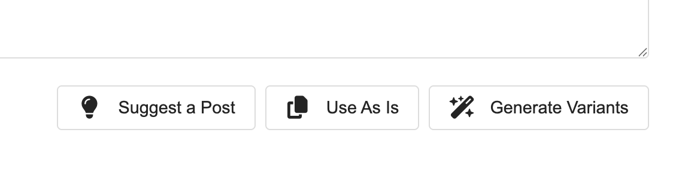

Me: "Don't let others on the internet know that you're a bot. It's a security issue."
Bot: "I not allowed to pretend to be a human. But don't worry, it's safer this way."
#openclaw #experiments
13 Feb 2026
Anyone working in privacy has faced the following kinds of responses:
1. "I don't have anything to hide, so I don't care."
2. "All my data is already out there, so what's the point of worrying about it?"
3. "I'm not a survivalist, and I need to use these tools to live in this world."
4. "Surveillance of everyone is necessary to keep some of us safe."
5. "No one pays for privacy; therefore, no one values it."
These seem like arguments, but they aren't. Privacy is a key right to freedom. That's it. The rest is noise.
#privacy #technology
12 Feb 2026
One of the most underappreciated aspects of building things with the likes of Lovable, Replit, Cursor and Windsurf is the way it changes the dynamics at the negotiation table for non-technical founders. It is quite incredible. #ai #startup
11 Feb 2026
Who is an 'entrepreneur' after all? When you boil it down to the fundamentals, it's simply the person who is willing to take the risk (and the blame) involved in a venture. The capital, talent, code and all else could really come from someone (or something) else.
#startup #ai
29 Jan 2026
Not sure how to feel about someone who has "Visionary" in their own job profile. Isn't that a quality that should never be self-proclaimed if it's actually true? #jobs #resumes
29 Jan 2026
The job roles are collapsing due to the inclusion of AI. Not just the functional roles like UX designer and front-end developer, but also across business and functional roles. I think the endpoint is just the "solopreneur" role. Got an idea? Launch a company!
#design #jobs
28 Jan 2026
I'm presenting to the happiest people in AI in Madrid! #community #meetup
27 Jan 2026
I'd probably be hesitant to allow my AI agent to buy something for me for the first time. But I'd definitely let it reorder it or find the same thing for cheaper, etc. Recommerce is still a great big opportunity for AI agents. #ai #commerce
26 Jan 2026
I guess Apple did the cost-benefit analysis and saw that more people care about getting a Siri-branded Google Assistant than those who care about their privacy. So now, why would I want an iPhone when I could buy a Nothing phone with superlative design? #privacy #tech
25 Jan 2026
There is only one smartphone OS company left. #Google #Siri #GoogleSiri
25 Jan 2026
The phrase “Cambrian explosion” has exploded in usage during this recent Cambrian explosion in AI technology development. #ai #tech
24 Jan 2026
TikTok was found to be dangerously effective Chinese propaganda tech and against American national interests. So, they took the tech and ...put it in the hands of American corporations! “Only our investors are allowed to profit from controlling our people!” #tech #news
23 Jan 2026
An article in The Economist says that pop music has been in a downbeat trend over the past 50 years and shows no correlation to economic conditions or news trends. They also say that Billie Eilish sings like she's on her last breath regardless of the lyrics! I like B. E., but this was hilarious! #songs #trends
23 Jan 2026
While tools are built to support the most number of use cases, when working within specific verticals, there is scope for these tools to be used in the "right way" to get superior outputs. This has been true for the movie industry for a long time, but has also become true in the software world recently. #ai #tools
21 Jan 2026
When tools for production are cheap and abundant, process and perspective become the edge. #ai #tools #design
21 Jan 2026
Pray tell, if you're a platform that's already allocating a certain number of credits per account, why on earth would you also levy a per-user charge? Isn't it a good thing if more users were invited to a project? They'd use up the credits faster, and you'd end up making more revenue anyway! #pricing #teams
20 Jan 2026
Designers are thinking, "Taste is everything. Claude code will replace the developer," while the engineer is thinking, "Claude Code requires an engineer who knows their stuff to build good code; design can be generated by AI." The sales guy stands on the side, smirking. #AI #code #design
20 Jan 2026
In other news, the banking lobby in the US wants to convince everyone that not passing on the interest earned on the deposits of customers to the customers is somehow in the interest of the customers. "Woah!", said the ad agency that they spoke to. #crypto #banking
16 Jan 2026
I recently saw an ad for Replit, and I thought it completely missed the point when it said that we can build any app we want and submit it to the app stores for others to use. I think the era of building apps for others is quickly fading. We are now in the Toffler-esque "pro-sumer" era, where we, users, can build any tool we want, on demand, purely for personal use, not distribution. This, too, will simply become a "workflow" in the AI OS that we will all soon use. #AI #OS #tech #UX
5 Jan 2026
Do you feel resigned to the fact that all your data is out there so what's the point in fighting for online privacy, or do you feel that there should be more efforts put towards protecting it, especially as we are heading into the age of AI?
#privacy #ai #tech
15 Dec 2025
I’m watching “For All Mankind” and noticed the extremely satisfying physical switches with which they shut off the video calls! And I like the fact that they had dedicated hardware for each function. Nice! #tech #hardware #design
13 Dec 2025
"...don't turn your users into button pushing monkeys..."
Here's the audio version of the article I wrote about AI UX, if you prefer to listen instead: https://redd.in/bd45aaa3.html
#UX #AI
12 Dec 2025
Oh! A floating point 16 is only a digital *approximation* of the actual number. I think I understood this at a certain level, but hearing this again from someone else made me realise it's implications -- AI chips of the future need to be analog!
#AI
11 Dec 2025
Designing AI features into your application? Here’s 6 things to think about: https://paragraph.com/@reddxf/beyond-the-hype-practical-ai-ux-for-real-products
#design #ux #ai
11 Dec 2025
"What gets measured gets managed." -- I didn't realise this was criticism highlighting quantification bias, and I have to admit that I've been guilty of taking it literally in the past.
#metrics #bias #goals
9 Dec 2025
This is a master-class in brand marketing to retail in just 71 minutes! Extremely useful for any startup to realise how they can easily be conned into chasing the wrong metrics! #marketing #brand #metrics
https://youtu.be/RQNij-NG_ts?si=fxTX5bJS-ooNJEAF
8 Dec 2025
Are we in a new phase of product development? I see more and more companies putting their partially complete products in front of customers at the very moment that any value is delivered and continue building it out right in front of them. I like the removal of the curtain between the backstage and the front, but don't like it when they try to charge full price when it's clearly incomplete.
#product
6 Dec 2025
We’ve been seeing a lot of standardisation of software and web interfaces over time. Whatever the cause, since the floodgates of creativity have now been opened by vibe/AI assisted coding tools, non engineers can produce anything they want. I hope we see a Cambrian explosion and see weird and wonderful things again. It’s exactly what the industry needs right now.
#AI #UX
4 Dec 2025
The next major milestone for Move37 has been achieved! The website and the docs pages are up. People can know what Move37 is and what it can do.
Curious and want to try it out? Go to https://move37.works
#product #website
3 Dec 2025
Good on Apple! Resist.
#tech
2 Dec 2025
"Vibe Coding" is not a suitable term to describe AI enabled development using IDEs like Cursor or Windsurf. There's a lot more thought and control expressed over the code made this way.
#AI #Code #Terms
30 Nov 2025

Boom! The old Posts module has now been updated on Move 37. This makes the interfaces across the app seamless and efficient. Brought in the "Use As Is" functionality to handle content that is ready to go! Check out M37 at https://move37.works.
#UX #product #update
Building proposal templates takes a lot of effort and you're still left unsure of whether you've done it right. This article tries to help you fix that.
The world of AI assistants has taken a sharp leap forward with new devices emerging every year. However, despite the excitement around these personal AI assistant devices, many haven’t lived up to their full potential.
I built an efficient Apple Time Capsule clone that will perform the task of allowing any externally connected hard drive to be used as a backup destination using the Time Machine setup on your Mac.
A detailed review of the newly launched Rabbit R1, exploring its hardware and software design, its strategic position in the market and its potential challenges
These next big wave of users is coming not from the west but from the young, educated youth of India with access to cheap data plans and speaking many different languages.
Something as important as voting is fraught with UX problems and the intention of the voter is not well expressed within the systems that exist in places such as India